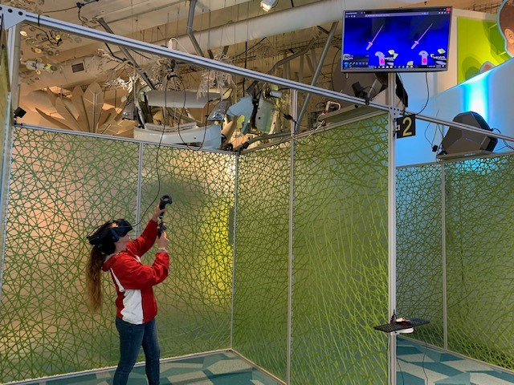

Project Summary
As part of a collaboration with MSOE and Discovery World, my team and I analyzed one of Discovery World’s science and technology experiences since they anticipated redesigning a few of their exhibits in the future. Given a two week deadline my team was tasked to provide an analysis paper on one of their exhibits and give User Experience recommendations on what could be improved.
Challenged with having to analyze both the exhibit in person and the website, we decided to split the work up based on our teams strengths. Being a computer science major with some experience in the front end web development, I personally took charge of analyzing the exhibits web site.
Using criteria that my group and I came up with, I analyzed Discovery Worlds Virtual Explorer exhibit web site and specifically looked at the sites Behavioral/Experience Design, the Usability of the web site and look for specific opportunities and recommendations that I could provide for Discovery World.
Member of our team testing the usability of the product.
Project Analysis
My team and I provide a solid analysis of the exhibit and we felt that we provided substantial User Experience recommendations on how the exhibit and website could be improved.
Through this project, I had to learn more about website design and how User Experience design relates to it so that I could analyze the Discovery World exhibit website to understand what flaws were on it and what recommendations I could give to improve the website.
I had to revisit my knowledge of Behavioral and Experience Design so that I could analyze more than the website’s User Interface. With this knowledge I was able to analyze how the webpage created Understanding and Curiosity, and how the webpage used certain techniques to help the user remember information. I also gave recommendations on how Discovery World could further improve these topics since User Experience is a continuous process and everything can be improved.
Through this project, I quickly realized how little I thought about User Experience when I am creating front end applications, and how I could create much better apps with a more thorough and in depth analysis. For example, I learned about a process called Guerrilla Usability testing. In this process an individual gathers user feedback by taking a design, like a mobile app or website, and asks 3-5 random people for their thoughts about certain aspects of the app, like workflow or a certain design. It is a quick and cheap way to get feedback about the User Experience and Design of an app. I personally used Guerrilla Usability testing to analyze my website, because I was too involved in the project and having new sets of eyes could only help me with creating a better website.